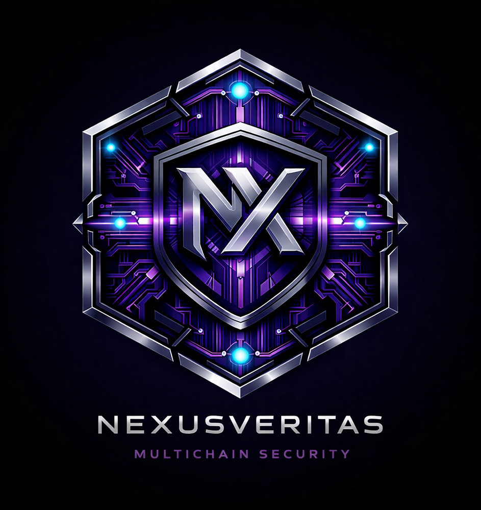

Solana First
v0.8.0 Live
9 Risk Signals
Insider Network Detection
Veritas Labs
Deterministic
Explainable
On-chain Verified
Most tools analyze tokens.
NexusVeritas analyzes the behavior and relationships behind them.
42 case studies · 7 operators · 1 recurring operator confirmed
GET /api/risk/solana/:address
Solana enables anyone to launch a token in minutes. The same openness that powers innovation also enables scams, rug pulls, fake liquidity, and coordinated market manipulation.
NexusVeritas exists to provide deterministic, explainable, and verifiable behavioral risk intelligence for Solana assets.
Our objective: help users understand risk before capital is exposed.
New in v0.8.0
Insider Network Detection
NexusVeritas now analyzes funding relationships between top holders. If multiple top holders were funded by the same source wallet, the engine identifies a potential insider cluster and applies graduated risk scoring based on cluster size and supply coverage.
{
"signal": "insiderNetwork",
"points": 20,
"reason": "6 top holders controlling 43% of supply share a common funding source"
}
OPERATOR INTELLIGENCE
Recurring Operators Detected
After 42 investigations, the same operator was confirmed across 2 cases (1 confirmed + 1 historical). Two additional cases were rejected after creator-level attribution. Invisible to conventional scanners — detected only through behavioral wallet analysis.
"fundingWallet": "AgmLJBMD...LJzN51",
"linkedLaunches": 1, ,
"cases": ["CASE_001", "CASE_022"],
"status": "recurring_operator"
NEW DIRECTION v0.9
Behavioral Fingerprint Engine
After 85 creator investigations across 3 pipeline runs, NexusVeritas confirmed that direct funding overlap is not a reliable operator detection mechanism. Operators have adapted.
CLUSTER_001 was discovered through behavioral signals: automated transfer cadence, SOL recycling loop, wallet factory pattern. The core detection methodology shifts from graph analysis to behavioral fingerprinting.
"fingerprint_score": 0.89,
"behavioral": { "transfer_count": 53, "recycling_loop": 1.0, "feeder_pattern": 0.92 },
"structural": { "wallet_age_days": 6, "funding_concentration": 1.0 }
RESEARCH REPORTS
Published Research
Report #1 — From Tokens to Operators: First 20 cases. Insider network detection methodology. Key finding: insider clusters exist even in low-risk tokens.
Report #2 — The Rise of Recurring Operators: 42 cases. Confirmed recurring operator (1 confirmed + 1 historical, 2 rejected). Records: 74% insider coverage, 77+ serial deployer.
Report #1 →
Report #2 →
Project Status
v0.8.0 — Behavioral Intelligence
9 independent risk signals. Connected to Solana mainnet. Validated on real tokens.
Completed
- Risk Engine
- Helius RPC integration
- Mint Authority
- Freeze Authority
- Holder Concentration
- Token Age Analysis
- Burner Registry
- Creator Wallet Analysis
- Whale Dominance
- Liquidity Analysis
- Insider Network Detection
- Confidence Breakdown
- Rate limiting & fail-safe
In Progress
- Behavioral Fingerprint Engine
- Operator Clustering
- Signal scoring & validation
Planned
- GET /risk/creator
- Batch Endpoint
- Webhooks
- Trust Graph
- Browser Extension
Risk Signals
Insider Network Detection ✦
| Token | Score | Class | Notes |
|---|
| BONK | 0 | LOW | No risk factors |
| JUP | 0 | LOW | No risk factors |
| USDC | 40 | MEDIUM | Mint + Freeze authority (Circle) |
| Known scam | 100 | CRITICAL | Serial deployer + whale + zero liquidity |
Risk Classification
LOW0–19No significant risk✓ Proceed
MEDIUM20–59Caution signals⚠ Caution
HIGH60–84Risk indicators⛔ Risk high
CRITICAL85–100Extreme profile✗ Blocked
Positioning
Why NexusVeritas
- No AI-generated scores
- Every signal is derived from observable blockchain state
- Explainable risk factors — not just a number
- Behavioral analysis — who acts behind the token
- Reproducible results for identical blockchain state
- Fail-safe operation
Roadmap
v0.1–v0.8
Core + Behavioral Engine
Completed ✓
v0.9
Fingerprint Engine
In Progress
v1.0
Operator Clustering
Planned
v1.1
GET /risk/creator
Planned
Veritas Ecosystem
PROTOCOL
CryptaVeritas
Signal verification (Commit-Reveal). Making manipulation mathematically impossible.
INFRASTRUCTURE
NexusVeritas
Behavioral risk intelligence for Solana. 9 signals. Deterministic. Explainable.
TOKEN
$CRYSIG
Single access token for the entire Veritas ecosystem.